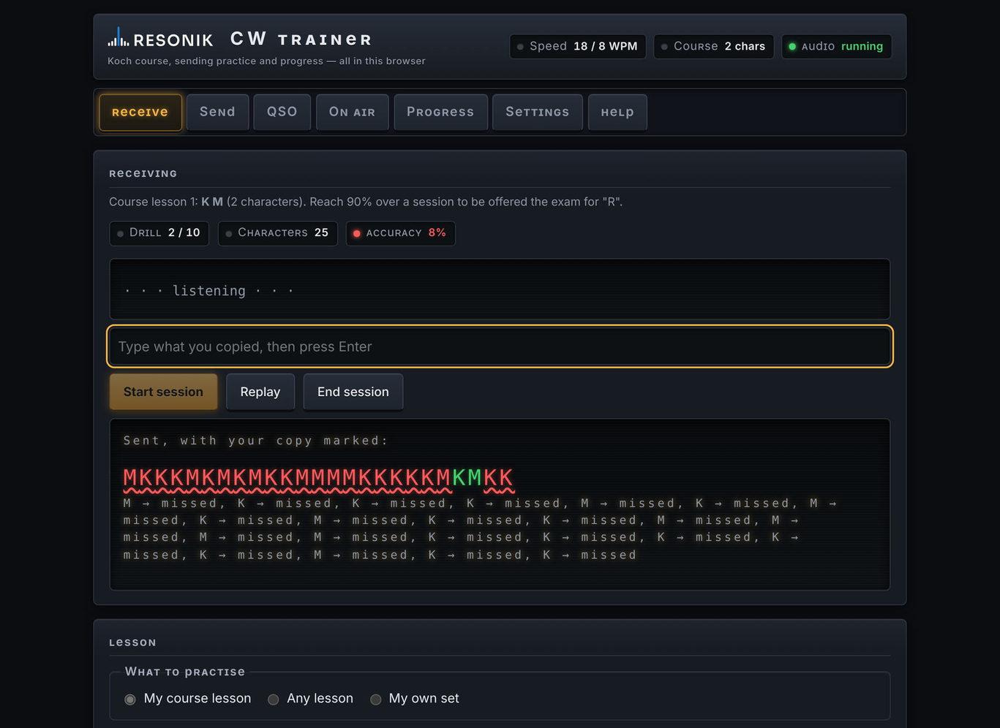
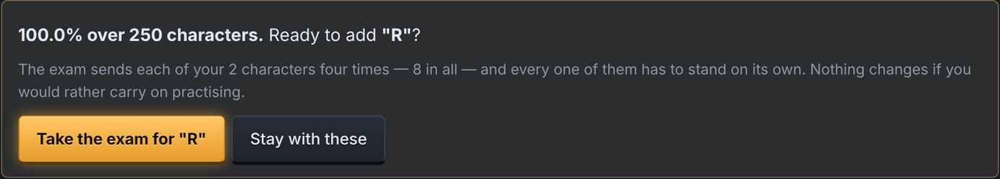

فهرست
فصل 3زبانهٔ Receive — یادگیری دریافت
دریافت نیمهٔ سختتر مورس است و نیمهای که اول اهمیت دارد: با کسی که نمیتوانید دریافتش کنید نمیتوانید تماس بگیرید. این زبانه چهل کاراکتر دوره را فقط از راه صدا میآموزد، یکییکی، و از همان دقیقهٔ اول با سرعت کامل.


3.1روش کُخ و قانون ۹۰٪
با دو کاراکتر با سرعت کامل شروع میکنید، و کاراکتر سوم فقط وقتی اضافه میشود که ۹۰٪ یا بهتر دریافت میکنید. در پایان همهٔ چهل کاراکتر را میدانید — و هیچوقت آنها را آهسته نشنیدهاید.
راه بدیهیِ دیگر، یعنی همهٔ چهل را آهسته یاد گرفتن و بعد سرعت گرفتن، به یک دلیل مشخص شکست میخورد. کاراکتری که آهسته فرستاده شود یک دنبالهٔ شمردنی است: دیت، دیت، دیت — سه تا، پس S. شمردن تا حدود ۱۰ کلمه در دقیقه کار میکند و بعد به دیوار میخورد، چون دیگر وقتی برای شمردن نیست. هرکس اینطور یاد بگیرد باید از سر بیرونش کند، و از سر بیرون کردن بسیار سختتر از یاد گرفتن است. کاراکتری که با سرعت کامل فرستاده شود اجزای شمردنی ندارد. یک صداست، همانطور که یک واژهٔ گفتاری یک صداست نه ردیفی از حرفها.
یک جلسه ده تمرین است. در پایان، اگر دستکم ۹۰٪ کاراکترها را روی دستکم ۵۰ کاراکتر درست دریافت کرده باشید، آزمونی برای کاراکتر بعدی به شما پیشنهاد میشود. پاس کردن این قانون دیگر خودش کاراکتر را اضافه نمیکند — تنها تعیین میکند که پرسیدن این پرسش ارزشش را دارد. وقتی روی ۸۸٪ میافتید این حد سختگیر به نظر میرسد. اما از شما محافظت میکند: افزودن کاراکتر تازه وقتی دو تای دیگر هنوز لرزاناند، همهٔ درسهای بعدی را سختتر میکند و اثرش روی هم انبار میشود.
چرا کاراکترها به این ترتیب میآیند
نه الفبایی، و نه کوتاهترین اول. ترتیب عمداً صداهای آسانقاطیشدنی را زود و نزدیک هم میگذارد، تا وقتی فقط چند تایی برای فکر کردن دارید یاد بگیرید از هم جدایشان کنید — نه اینکه در کاراکتر سیام برای اولین بار به آنها بربخورید.
K M R S U A P T L O W I . N J E F 0 Y , V G 5 / Q 9 Z H 3 8 B ? 4 2 7 C 1 D 6 X
3.2آزمونی که کاراکتر تازه را اضافه میکند
پیشتر یک جلسهٔ خوب خودش کاراکتر بعدی را اضافه میکرد. دیگر این کار را نمیکند، به دو دلیل که با گفتن روشن میشوند.
توقف زودهنگام میتوانست شما را از قانون رد کند. سه تمرین بهراحتی از پنجاه کاراکتر میگذرد، پس زدن End session وقتی جلو هستید میتوانست کاراکتری به شما بدهد که هرگز نخواسته بودید.
و ۹۰٪ یک میانگین است، و میانگینها پنهان میکنند. در درس ۱۰ یازده کاراکتر دارید؛ یکی از آنها با دقت ۴۰٪ حدود ۹٪ جریان است، پس جلسه باز هم حدود ۹۲٪ میشود. آن کاراکتر خراب به همهٔ درسهای پس از آن منتقل میشود، هر بار رقیقتر و در نتیجه کماحتمالتر که هرگز گرفته شود. قانون دقیقاً همانجا ضعیفتر میشد که دوره سختتر میشد.


پس جلسهٔ واجد شرایط اکنون با یک پیشنهاد تمام میشود: دقت شما، کاراکتری که روی میز است، و دو دکمه — Take the exam for “X” و Stay with these.
Stay with these را بزنید و پیشنهاد در پایان جلسهٔ خوب بعدی برمیگردد. نه یک فرصت یکباره است و نه سمج. عضوی که میخواهد یک ماه روی درس ۱۲ بماند هیچ کار نادرستی نمیکند و نباید مجبور باشد با برنامه بحث کند.
آزمون چیست
مثل تمرینهای معمولی دیده و شنیده میشود. هر کاراکتر شما دقیقاً چهار بار فرستاده میشود، درهمریخته در همان گروههای پنجتایی. چیزی بر پایهٔ کاراکتر دستهبندی نمیشود و چیزی اعلام نمیکند که چه در راه است. در درس ۱۰ این ۴۴ کاراکتر است؛ در درس ۳۹، ۱۵۶ کاراکتر.
تنها وقتی پاس میشود که هر دو شرط برقرار باشند:
- هر کاراکتر دستکم سه از چهار بگیرد
- دقت کلی دستکم ۹۰٪ باشد
شرط نخست تمام نکتهٔ کار است: هیچ کاراکتری نمیتواند پشت بقیه پنهان شود. شرط دوم جلوی قبولیای را میگیرد که تماماً از سهازچهارها ساخته شده باشد — شرط نخست را برآورده میکند بیآنکه آماده باشد.
طول آزمون عمداً سقف ندارد. درس ۱ هشت کاراکتر است و درس ۳۹ صد و پنجاه و شش، چون هزینه باید با اندازهٔ آنچه باید ثابت شود بزرگ شود — و این هزینه یک بار برای هر ارتقا پرداخت میشود، نه یک بار در هر جلسه.
مردود شدن
چیزی از شما گرفته نمیشود و هیچ دورهٔ انتظاری در کار نیست. نتیجه کاراکترهایی را که زمینتان زدند نام میبرد — «D، K و ۷ زیر سه از چهار آمدند» — و از آن پس آن کاراکترها در تمرینهای بعدی بیشتر میآیند تا دیگر مشکل نباشند. آزمون مردودشده تمرین شما را هدایت میکند، نه اینکه تنها گزارشش کند.
آزمونی که متوقف شود رها میشود، نه نمرهگذاری. نیمهٔ یک آزمون نمیتواند نشان دهد هر کاراکتر روی پای خودش میایستد، و نمره دادن به آن یا ناعادلانه مردودتان میکند یا بر پایهٔ تکهای قبولتان. چیزی تغییر نمیکند؛ وقتی برای همهاش وقت داشتید دوباره شروعش کنید.
3.3اجرای یک جلسه
- Start session را بزنید. تمرینی به طولِ تنظیمشده در «Drill length» (۵ تا ۱۰۰ کاراکتر، پیشفرض ۲۵) فرستاده میشود.
- آنچه میشنوید همان لحظه یا بعد در کادر دریافت تایپ کنید و Enter بزنید. بزرگ و کوچک بودن حرف و فاصلهها اهمیتی ندارد.
- تمرین با علامتگذاری دریافت شما نشان داده میشود: کاراکترهای درست، غلط، و آنها که از دست دادید. Replay همان تمرین را دوباره میفرستد تا آنچه را از دست دادید بشنوید.
- تمرین بعدی خودش شروع میشود. پس از ده تمرین، جلسه با دقت شما تمام میشود و اگر قانون را پاس کرده باشید، کاراکتر تازهای باز میشود.
- End session زودتر متوقف میکند. تمرینهای تمامشده همچنان در آمار حساب میشوند، اما جلسهٔ ناتمام چیزی باز نمیکند.
نمایشگرهای بالای تمرین درس، شمارهٔ تمرین، کاراکترهای فرستادهشده تا حالا و دقت جاری شما را نشان میدهند.
3.4چه چیزی تمرین کنید
دوره تصمیم میگیرد برای چه آمادهاید، اما لازم نیست تصمیم بگیرد چه تمرین میکنید. زیر What to practise سه گزینه هست:
<AR>، با هر جداکنندهای که بخواهید.جلسههای روی درسی جز درس خودتان، یا روی مجموعهٔ خودتان، تمریناند: ثبت میشوند و ماتریس اشتباهگیری را پر میکنند، اما به جای شما در دوره دست نمیزنند. هیچکس نمیخواهد با سرک کشیدن به درس ۳۰، تصادفی شش کاراکتر باز کند.
اگر درس اول وقتتان را هدر میدهد، «Any lesson» را برگزینید، آن را روی جایی که واقعاً هستید بگذارید و Start my course here را بزنید. این جای شما در دوره را جلو میبرد و از آنجا قانون ۹۰٪ فرمان را میگیرد.
3.5سرعت: دو عدد، نه یک عدد
سرعت کاراکتر یعنی هر کاراکتر با چه سرعتی فرستاده میشود. سرعت مؤثر یعنی کلّ پیام، با حساب فاصلهها، با چه سرعتی میرود. این برنامه آنها را جدا تنظیم میکند، و تفاوتشان مفیدترین ویژگیِ یادگیری دریافت است.
پیشفرض، کاراکتر ۱۸ WPM با مؤثر ۸ WPM است. هر کاراکتر با سرعتی که هدف شماست میرسد، پس ریتم واقعیاش را یاد میگیرید — اما سکوتی بلند پس از آن میآید که در آن بشناسیدش و تایپش کنید. این فاصلهگذاری فارنزورث است؛ کلید «Padded gaps / Standard timing» آن را روشن و خاموش میکند، و «Standard timing» صرفاً سرعت مؤثر را برابر سرعت کاراکتر میگذارد.
هرچه پیش میروید سرعت مؤثر را بالا ببرید و سرعت کاراکتر را دست نزنید. زمانِ فکر کردن خودتان را کوتاه میکنید، نه چیزی را دوباره یاد میگیرید. وقتی مؤثر به کاراکتر رسید، هر دو را با هم بالا ببرید.
اعداد از کجا میآیند
سرعت با واژهٔ PARIS سنجیده میشود که فرستادنش با فاصلهٔ پس از آن دقیقاً ۵۰ طولِ دیت است. پس ۲۰ کلمه در دقیقه یعنی بیست PARIS در دقیقه، و یک دیت ۱۲۰۰ ÷ ۲۰ = ۶۰ میلیثانیه است. دا سه دیت است؛ فاصلهٔ درون کاراکتر یک دیت، میان کاراکترها سه، میان واژهها هفت.
3.6نیمهکاره گذاشتن یک رشته
هر رشته شامل ده تمرین است و انجام هر ده تمرین در یک نشست الزامی نیست. وضعیت رشته در جریان پیشرفت ثبت میشود؛ بنابراین بارگذاری دوبارهٔ صفحه، بستن زبانه، یا به خواب رفتن صفحه بر روی تلفن همراه، هیچیک کاربر را به تمرین نخست بازنمیگرداند و وضعیت در همان تمرینی که به آن رسیده بود حفظ میشود. در صورت بازگشت در همان روز، تمرین از همان نقطه ادامه مییابد.
چنانچه کاربر نگهداری سوابق خود را بر روی سرور درخواست کرده باشد (بخش ۶٫۱۲)، رشته میان دستگاههای همان کاربر نیز منتقل میشود. دو تمرین بر روی رایانهٔ همراه و هشت تمرین بر روی تلفن، یک رشتهٔ دهتایی به شمار میآید و همان پیشنهاد ارتقا را در پی دارد که ده تمرین بر روی یک دستگاه در پی میداشت. در این حالت موضوع به اطلاع کاربر رسانده میشود و تأییدی از وی خواسته نمیشود؛ کار متعلق به خود اوست و درخواست تأیید، مزاحمت است نه تدبیر ایمنی.
رشتهای که بیش از نیمروز بدون فعالیت بماند، دیگر رشتهای در جریان محسوب نمیشود. چنین رشتهای بسته میشود و با همان تعداد تمرین انجامشده، بهعنوان جلسهای کوتاه ثبت میگردد؛ بدین معنا که موجب ارتقا نخواهد شد، زیرا ارتقا مستلزم پنجاه کاراکتر در یک جلسه است. جلسهٔ بعدی از ابتدا آغاز میشود.
در صورتی که دو دستگاه همزمان بر روی یک رشته تمرین کرده باشند، نسخهای که تمرین بیشتری در آن ثبت شده است حفظ میشود و کارِ دستگاه دیگر بهعنوان جلسهای مستقل ثبت میگردد. هیچ تمرین انجامشدهای برای رفع ناسازگاری میان دو دستگاهِ یک کاربر حذف نمیشود.
3.7تمرین در شرایط واقعی
تمام تمرینهایی که تا این بخش شرح داده شد، بر پایهٔ سیگنال آرمانی است: آوای یکنواخت با تراز ثابت، نبودِ نوفه در پسزمینه، نبودِ ایستگاه دیگر بر روی فرکانس، و زمانبندی دقیق در حد میلیثانیه، چرا که منشأ آن رایانه است. سیگنال واقعی بر روی باند چنین ویژگیهایی ندارد.
اهمیت این تفاوت بیش از آن است که در نگاه نخست به نظر میرسد. چنانچه نخستین سیگنال ناقصِ دریافتیِ کاربر، سیگنالی واقعی و در شرایط واقعی باشد، احتمال آن میرود که وی توانایی دریافت خود را ناکافی ارزیابی کند؛ حال آنکه توانایی وی کافی است و تنها در شرایط دیگری تمرین نکرده است. از این رو، پس از باز شدن ده کاراکتر، بخش Settings ← Real conditions در دسترس قرار میگیرد و چهار نوع اختلال را در دو تراز، بهصورت همزمان یا جداگانه، عرضه میکند.
این پیشنهاد است و نه الزام. تا هنگامی که کاراکتری تازه آموخته شده است، شرایط را غیرفعال نگاه دارید و پس از تثبیت هر درس آن را فعال کنید. کاربرد این بخش، تثبیت آموختههاست نه آموختن مطالب تازه.
دو تضمین
آزمونها همواره بر روی سیگنال تمیز اجرا میشوند، صرفنظر از تنظیمات این بخش؛ این امر شامل آزمون هر کاراکتر و آزمون نهایی است. گواهی باید برای تمام دارندگان آن معنای یکسانی داشته باشد، و در صورت تفاوت شرایط آزمون میان دو کاربر، این شرط برقرار نخواهد بود.
افزون بر این، تراز شرایطِ هر جلسه ثبت میشود. امتیاز جلسههایی که در شرایط اختلال انجام میشوند، از جلسههای تمیز پایینتر است و این امر طبیعی است. بدون ثبت تراز، زبانهٔ Progress از هنگام فعالسازی این بخش روندی نزولی نشان میداد که نادرست میبود: کاهش امتیاز ناشی از دشوارتر شدن شرایط است، نه افت توانایی کاربر.